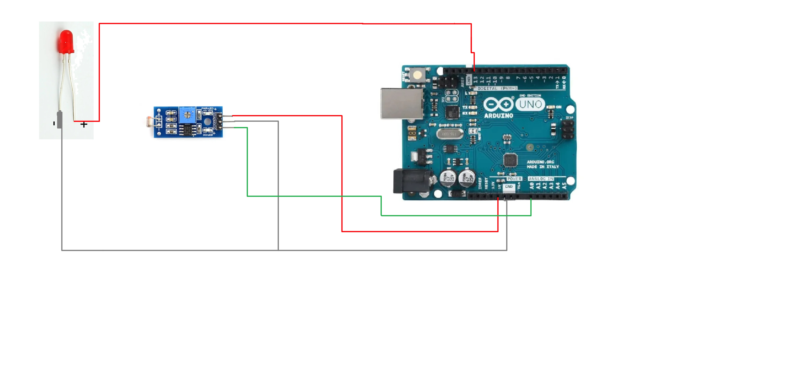

An LDR (Light Dependent Resistor) can be used to create automatic lighting systems that turn on lights when it's dark. This project shows how to connect an LDR to an Arduino and control an LED based on ambient light levels.
How It Works
The LDR changes its resistance based on light intensity. When the environment is dark, resistance increases and the Arduino reads a higher analog value. You can set a threshold value in your code to decide when to turn the LED on or off.
Arduino Code
Copy and paste the following code into the Arduino IDE:
const int ldrPin = A0; // LDR connected to analog pin A0
const int ledPin = 13; // LED connected to digital pin 13
int threshold = 500; // Threshold value to determine light/dark
void setup() {
pinMode(ledPin, OUTPUT); // Set the LED pin as OUTPUT
Serial.begin(9600); // Start serial communication for debugging
}
void loop() {
int ldrValue = analogRead(ldrPin); // Read the value from LDR
Serial.println(ldrValue); // Print the LDR value for debugging
if (ldrValue < threshold) { // If light is bright
digitalWrite(ledPin, LOW); // Turn off the LED
} else {
digitalWrite(ledPin, HIGH); // If dark, turn on the LED
}
delay(100); // Small delay for stability
}
Components Required
- Arduino Uno
- LDR (Light Dependent Resistor)
- 10kΩ resistor
- LED
- 220Ω resistor
- Breadboard and Jumper Wires
Circuit Diagram
Applications
- Automatic Night Lamps
- Street Light Automation
- Energy-efficient Lighting Systems
Conclusion
This simple LDR project introduces the concept of light-sensitive automation using Arduino. By adjusting the threshold or combining with other components, you can create advanced projects like smart lighting or security systems.